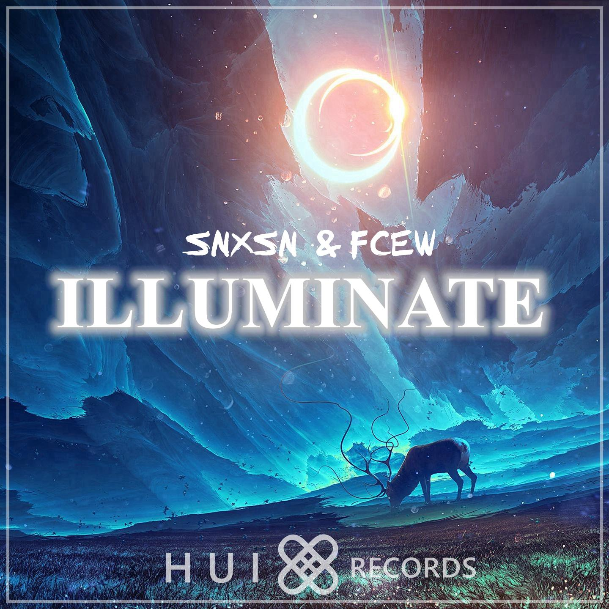
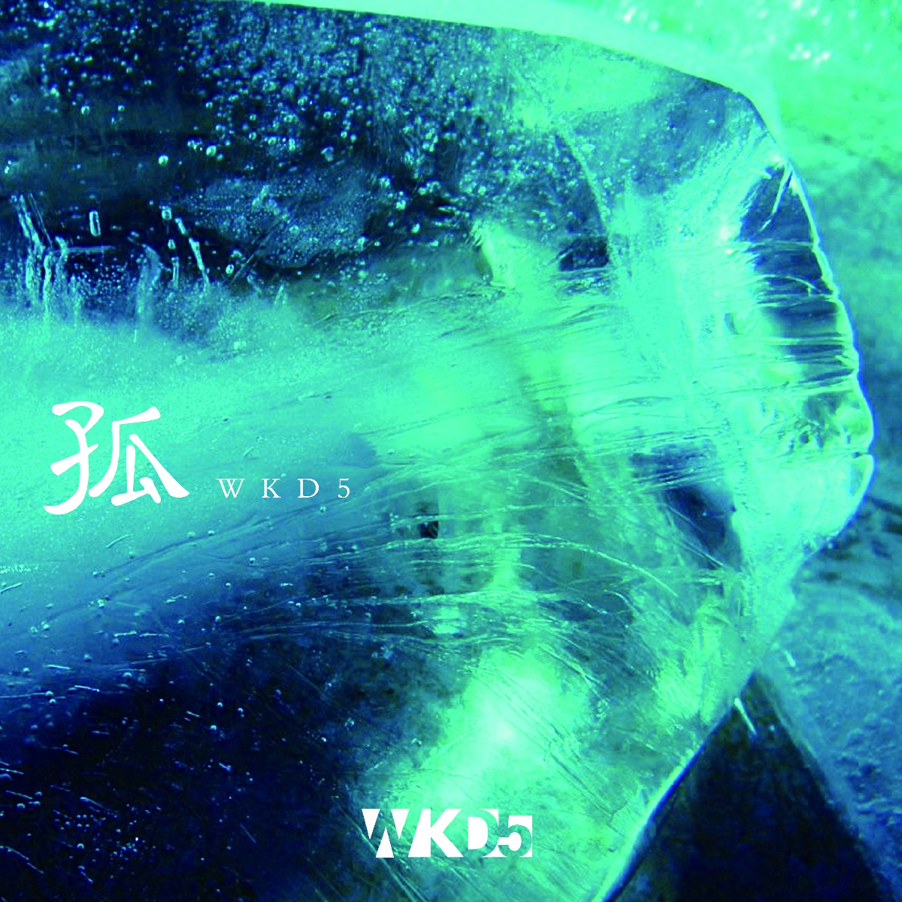
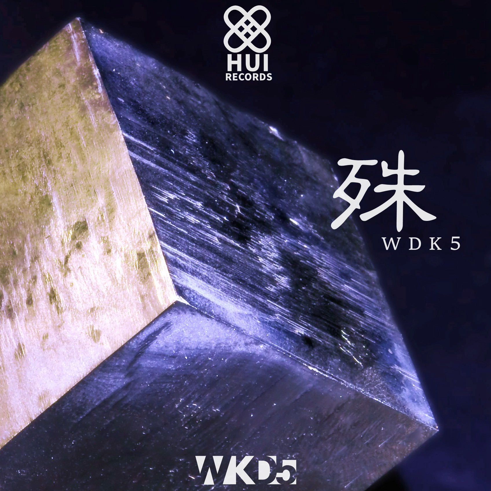
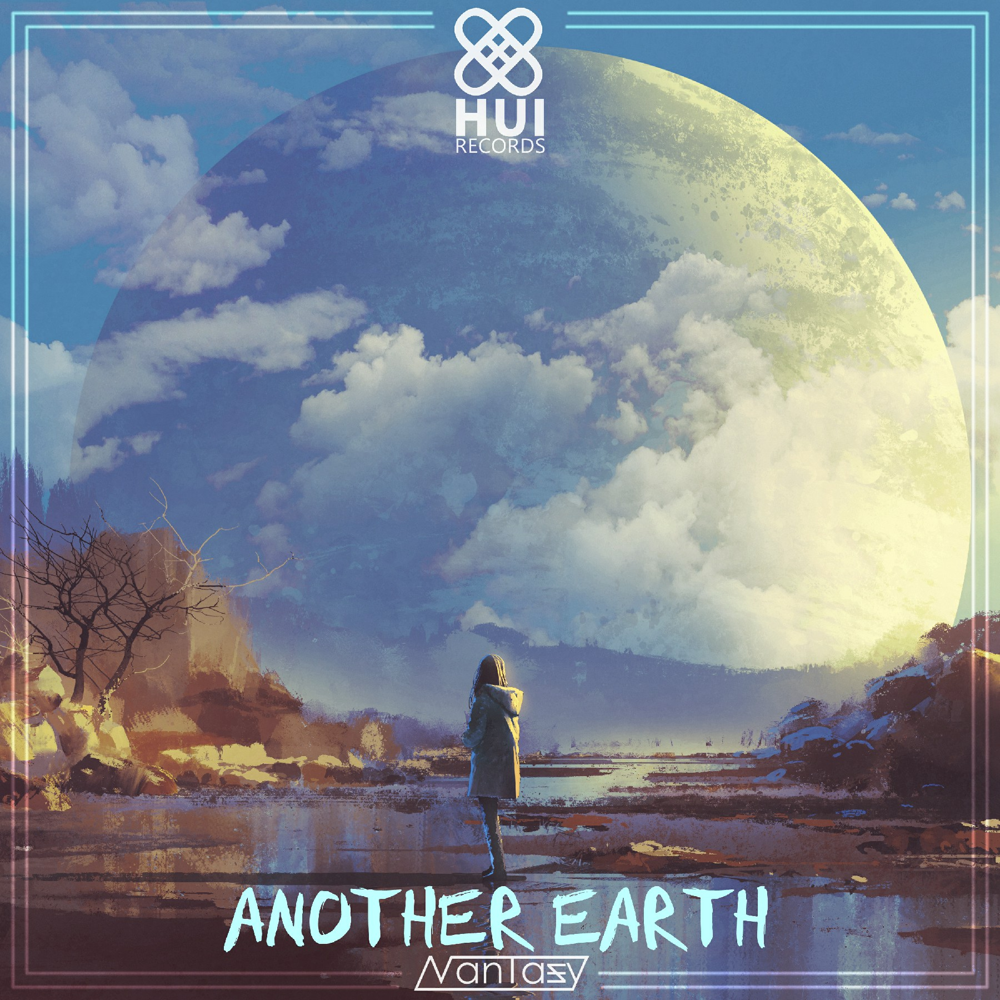
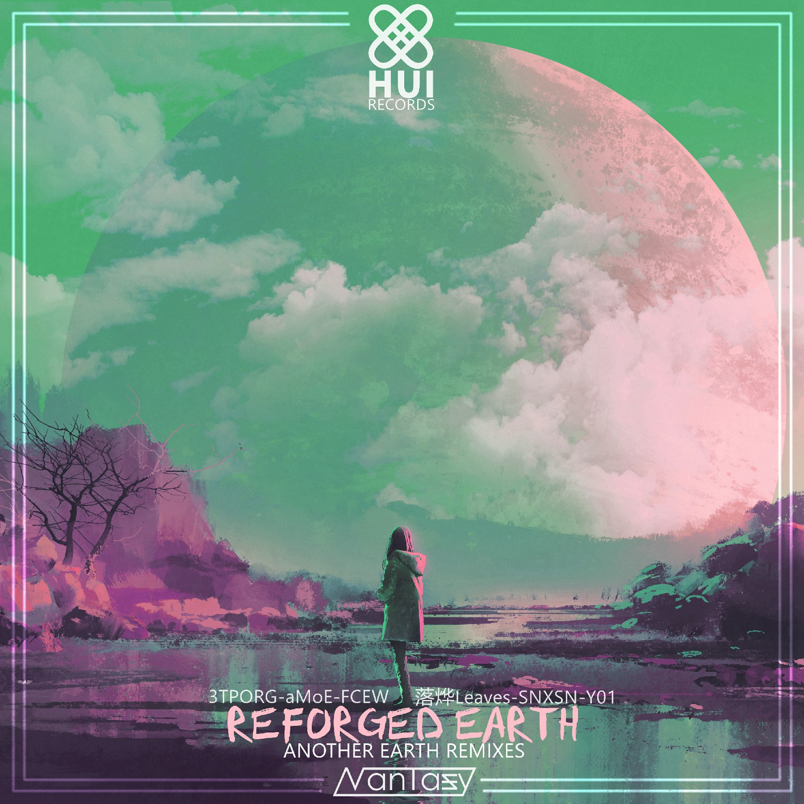

- Recent -
- 专辑 -
|  |
Illuminate— — — — — — — — — — — — — — — — — — — — — — — — — — — — — —
|
Reverse To Death— — — — — — — — — — — — — — — — — — — — — — — — — — — — — —
|
|
|  |
孤(Original Mix)— — — — — — — — — — — — — — — — — — — — — — — — — — — — — —
|
Flu— — — — — — — — — — — — — — — — — — — — — — — — — — — — — —
|
|
|  |
殊— — — — — — — — — — — — — — — — — — — — — — — — — — — — — —
|
|  |
Another Earth— — — — — — — — — — — — — — — — — — — — — — — — — — — — — — |
Penny— — — — — — — — — — — — — — — — — — — — — — — — — — — — — — |
|
Distance— — — — — — — — — — — — — — — — — — — — — — — — — — — — — — |
|
|  |
Reforged Earth— — — — — — — — — — — — — — — — — — — — — — — — — — — — — — |
更多作品 / 作品投稿 |
- PV -
- 社团 & 厂牌 -
关于 | 卉Hui.Works起初，我只是突然有了一个灵感，觉得“卉”这个字，跟日本的鸟居好像啊。然后便开始试着做一下卉这个字的艺术形态(结合鸟居的造型)，接着越做越觉得挺不错的，就顺便设计了Logo 初代版本可以说是平面为主，卉字的横竖并没有层次感，后来在朋友的建议下，增添了阴影，做出一种笔画，横竖相架构的感觉。同时因为将笔画分离，便可以顺理成章的合成鸟居的形象，然后再做一个小动画 Logo做到一半的时候，P.A.Works的这个Logo形式就已经被内定了，但是我琢磨着叫——H.Works好像有点微妙，所以还是叫Hui.Works比较好，然后整体配色参照卉字和鸟居的风格进行了一些改动(就瞎改改)，最后加一个动态遮罩渐变出来就OK了。 |
卉厂 | HUI-Record的诞生
起初：仅仅是以做做电子音乐的教程开始，后来观众越来越多，便创建了交流群。 随着时间的推移，群内进来了越来越多喜欢音乐的小伙伴，聊天的内容除了交流编曲相关的问题，时不时也会聊到编曲的合作。 于是，我和马铃薯(教程制作人&社团元老)在某一天讨论之后，决定建立卉社的厂牌——HUI-Record 在厂牌建立之后，由于我忙于游戏的制作，没有时间管理厂牌和群组的事务。直到马铃薯与SNXSN合作了一首Progressive House以卉厂的第一张专辑发布，我才意识到厂牌需要良好的管理，便开始着手包括网站等宣传在内的工程。 |